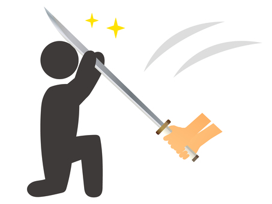

「しりとり」の「り」を開始点としてしりとりをします。前の単語に続く単語をひらがなでテキストフィールドに入力して送信を押してください
・「ー」で終わる単語は一つ前の文字が次の単語の語頭になります。
・一度使用した単語を再度使用することはできません。
・精度の良いしりとりを続けることでコンボが繋がります。一度使った言葉を再度使用したり前の単語に続かない言葉を入力するとコンボはリセットされます。
・「ん」で終わる単語を入力するとゲームオーバーです。
-------------------------------------------------------------------------------------------------------------------------------------------------------------------------------------------------------------------------------------

画像引用元:https://www.ac-illust.com/main/detail.php?id=1767985